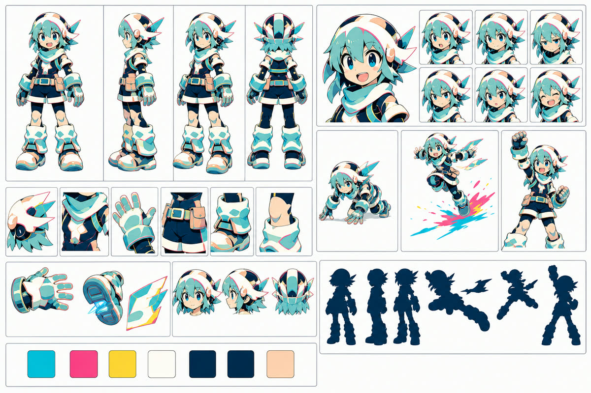
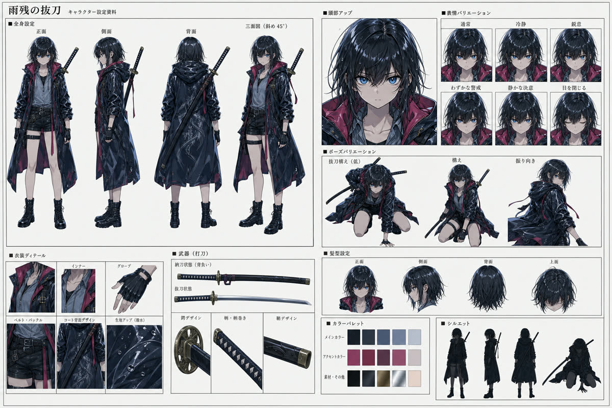
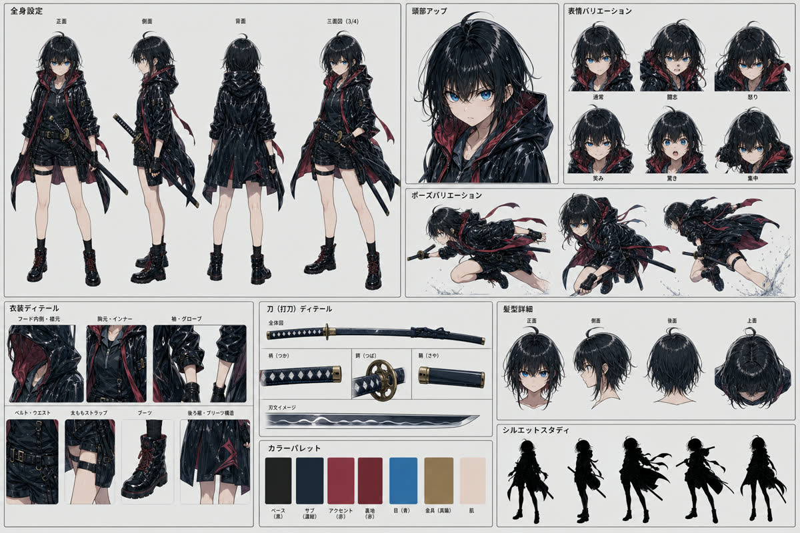
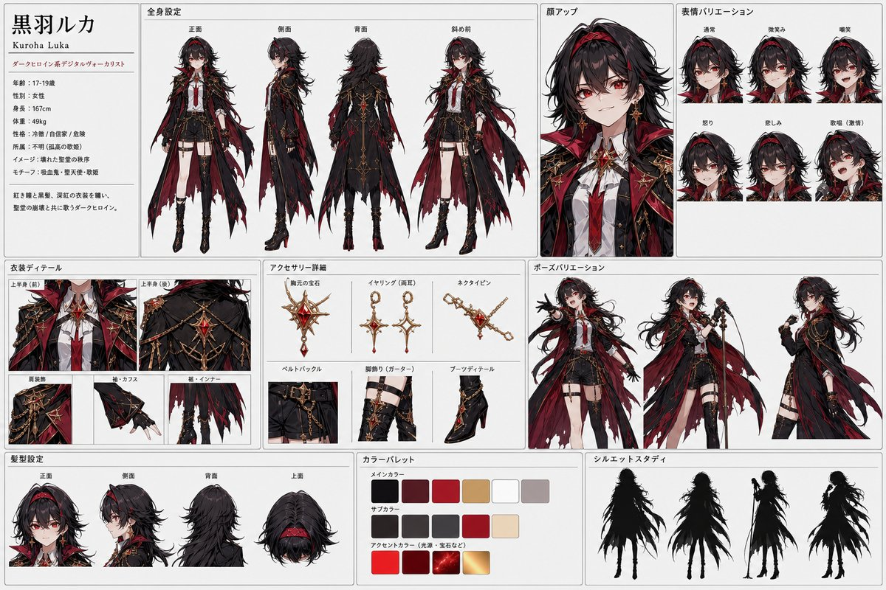

oKini Music Character Archive
YouTube楽曲と連動するキャラクター、世界観、制作資料をまとめる公開アーカイブです。通常版キャラシートは紹介用、シンプル版は制作参照用として保管しています。

Maximum Dash
シアンとマゼンタの軌跡を残して全力で走る、無邪気なハイスピードキャラクター。

Rain Remnant Draw
雨の石畳に膝をつき、抜刀の一瞬まで呼吸を細くする姉。静けさの中で迷いを断つ。

Resolve Not to Stop
雨の都市夜景を、緋色の差し色と刀で走り抜ける妹。止まれない理由を走りながら探す。

Red Cathedral Signal
赤い崩壊聖堂で、禁じられた信号を自分の声へ変えるダークヒロイン。